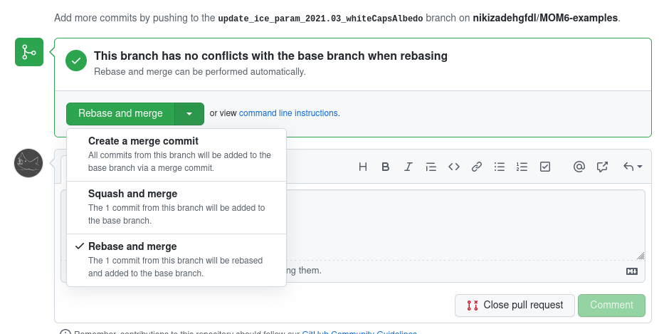

MOM6 Repo Guide
Marshall Ward
2022-13-05
Repository Space

- Inner radius
History-preserving
- Outer radius
Nonhistoric "Drafts"
Nodes (eventually) share a common history via MOM-ocean hub
History preservation
Who should preserve history?
- Production runs with defined source
- Anyone sharing code with production source
- i.e. Group "main" branches ("
dev/XXX")
- i.e. Group "main" branches ("
Who can rewrite history?
- Individual PRs
- External contributions
Why curate?
Ensure every commit will run and pass tests
git bisectdebugging- Broken commits break bisection
Well-documented development history
- Code is "how", commits are "why"
- Efficient code review
- Improves automated reporting
Commits in Linux
Commit messages to me are almost as important as the code change itself.
If you can explain the code change to me, I will trust the code.
Linus Torvalds, Linux OSS 2020
Curated Example
commit 53d5fc89d66a778577295020dc57bb3ccec84354
Merge: f5b667ded075 172da89ed0ea
Author: Linus Torvalds <torvalds@linux-foundation.org>
Date: Fri Oct 1 14:45:23 2021 -0700
Merge tag 's390-5.15-4' of git://git.kernel.org/pub/scm/linux/kernel/git/s390/linux
Pull s390 fix from Vasily Gorbik:
"One fix for 5.15-rc4: Avoid CIO excessive path-verification requests,
which might cause unwanted delays"
* tag 's390-5.15-4' of git://git.kernel.org/pub/scm/linux/kernel/git/s390/linux:
s390/cio: avoid excessive path-verification requests
commit f5b667ded07569dd6e33885cffd35fd519cfc942
Author: Rafael J. Wysocki <rafael@kernel.org>
Date: Fri Oct 1 19:14:28 2021 +0200
thermal: Update information in MAINTAINERS
Because Rui is now going to focus on work that is not related to the
maintenance of the thermal subsystem in the kernel, Rafael will start
to help Daniel with handling the development process as a new member
of the thermal maintainers team. Rui will continue to review patches
in that area.
The thermal development process flow will change so that the material
from the thermal git tree will be merged into the thermal branch of
the linux-pm.git tree before going into the mainline.
Update the information in MAINTAINERS accordingly.
Signed-off-by: Rafael J. Wysocki <rafael@kernel.org>
Acked-by: Zhang Rui <rui.zhang@intel.com>
Acked-by: Daniel Lezcano <daniel.lezcano@linaro.org>
Signed-off-by: Linus Torvalds <torvalds@linux-foundation.org>
commit b2626f1e3245ddd810b69df86514774d6cb655ee
Merge: 24f67d82c43c 7b0035eaa7da
Author: Linus Torvalds <torvalds@linux-foundation.org>
Date: Fri Oct 1 11:08:07 2021 -0700
Merge tag 'for-linus' of git://git.kernel.org/pub/scm/virt/kvm/kvm
Pull more kvm fixes from Paolo Bonzini:
"Small x86 fixes"
* tag 'for-linus' of git://git.kernel.org/pub/scm/virt/kvm/kvm:
KVM: selftests: Ensure all migrations are performed when test is affined
KVM: x86: Swap order of CPUID entry "index" vs. "significant flag" checks
ptp: Fix ptp_kvm_getcrosststamp issue for x86 ptp_kvm
x86/kvmclock: Move this_cpu_pvti into kvmclock.h
selftests: KVM: Don't clobber XMM register when read
KVM: VMX: Fix a TSX_CTRL_CPUID_CLEAR field mask issue
commit 7b0035eaa7dab9fd33d6658ad6a755024bdce26c
Author: Sean Christopherson <seanjc@google.com>
Date: Wed Sep 29 16:41:12 2021 -0700
KVM: selftests: Ensure all migrations are performed when test is affined
Rework the CPU selection in the migration worker to ensure the specified
number of migrations are performed when the test iteslf is affined to a
subset of CPUs. The existing logic skips iterations if the target CPU is
not in the original set of possible CPUs, which causes the test to fail
if too many iterations are skipped.
==== Test Assertion Failure ====
rseq_test.c:228: i > (NR_TASK_MIGRATIONS / 2)
pid=10127 tid=10127 errno=4 - Interrupted system call
1 0x00000000004018e5: main at rseq_test.c:227
2 0x00007fcc8fc66bf6: ?? ??:0
3 0x0000000000401959: _start at ??:?
Only performed 4 KVM_RUNs, task stalled too much?
Calculate the min/max possible CPUs as a cheap "best effort" to avoid
high runtimes when the test is affined to a small percentage of CPUs.
Alternatively, a list or xarray of the possible CPUs could be used, but
even in a horrendously inefficient setup, such optimizations are not
needed because the runtime is completely dominated by the cost of
migrating the task, and the absolute runtime is well under a minute in
even truly absurd setups, e.g. running on a subset of vCPUs in a VM that
is heavily overcommited (16 vCPUs per pCPU).
Fixes: 61e52f1630f5 ("KVM: selftests: Add a test for KVM_RUN+rseq to detect task migration bugs")
Reported-by: Dongli Zhang <dongli.zhang@oracle.com>
Signed-off-by: Sean Christopherson <seanjc@google.com>
Message-Id: <20210929234112.1862848-1-seanjc@google.com>
Signed-off-by: Paolo Bonzini <pbonzini@redhat.com>
commit e8a747d0884e554a8c1872da6c8f680a4f893c6d
Author: Sean Christopherson <seanjc@google.com>
Date: Wed Sep 29 15:24:25 2021 -0700
KVM: x86: Swap order of CPUID entry "index" vs. "significant flag" checks
Check whether a CPUID entry's index is significant before checking for a
matching index to hack-a-fix an undefined behavior bug due to consuming
uninitialized data. RESET/INIT emulation uses kvm_cpuid() to retrieve
CPUID.0x1, which does _not_ have a significant index, and fails to
initialize the dummy variable that doubles as EBX/ECX/EDX output _and_
ECX, a.k.a. index, input.
Practically speaking, it's _extremely_ unlikely any compiler will yield
code that causes problems, as the compiler would need to inline the
kvm_cpuid() call to detect the uninitialized data, and intentionally hose
the kernel, e.g. insert ud2, instead of simply ignoring the result of
the index comparison.
Although the sketchy "dummy" pattern was introduced in SVM by commit
66f7b72e1171 ("KVM: x86: Make register state after reset conform to
specification"), it wasn't actually broken until commit 7ff6c0350315
("KVM: x86: Remove stateful CPUID handling") arbitrarily swapped the
order of operations such that "index" was checked before the significant
flag.
Avoid consuming uninitialized data by reverting to checking the flag
before the index purely so that the fix can be easily backported; the
offending RESET/INIT code has been refactored, moved, and consolidated
from vendor code to common x86 since the bug was introduced. A future
patch will directly address the bad RESET/INIT behavior.
The undefined behavior was detected by syzbot + KernelMemorySanitizer.
BUG: KMSAN: uninit-value in cpuid_entry2_find arch/x86/kvm/cpuid.c:68
BUG: KMSAN: uninit-value in kvm_find_cpuid_entry arch/x86/kvm/cpuid.c:1103
BUG: KMSAN: uninit-value in kvm_cpuid+0x456/0x28f0 arch/x86/kvm/cpuid.c:1183
cpuid_entry2_find arch/x86/kvm/cpuid.c:68 [inline]
kvm_find_cpuid_entry arch/x86/kvm/cpuid.c:1103 [inline]
kvm_cpuid+0x456/0x28f0 arch/x86/kvm/cpuid.c:1183
kvm_vcpu_reset+0x13fb/0x1c20 arch/x86/kvm/x86.c:10885
kvm_apic_accept_events+0x58f/0x8c0 arch/x86/kvm/lapic.c:2923
vcpu_enter_guest+0xfd2/0x6d80 arch/x86/kvm/x86.c:9534
vcpu_run+0x7f5/0x18d0 arch/x86/kvm/x86.c:9788
kvm_arch_vcpu_ioctl_run+0x245b/0x2d10 arch/x86/kvm/x86.c:10020
Local variable ----dummy@kvm_vcpu_reset created at:
kvm_vcpu_reset+0x1fb/0x1c20 arch/x86/kvm/x86.c:10812
kvm_apic_accept_events+0x58f/0x8c0 arch/x86/kvm/lapic.c:2923
Reported-by: syzbot+f3985126b746b3d59c9d@syzkaller.appspotmail.com
Reported-by: Alexander Potapenko <glider@google.com>
Fixes: 2a24be79b6b7 ("KVM: VMX: Set EDX at INIT with CPUID.0x1, Family-Model-Stepping")
Fixes: 7ff6c0350315 ("KVM: x86: Remove stateful CPUID handling")
Cc: stable@vger.kernel.org
Signed-off-by: Sean Christopherson <seanjc@google.com>
Reviewed-by: Jim Mattson <jmattson@google.com>
Message-Id: <20210929222426.1855730-2-seanjc@google.com>
Signed-off-by: Paolo Bonzini <pbonzini@redhat.com>
commit 773e89ab0056aaa2baa1ffd9f044551654410104
Author: Zelin Deng <zelin.deng@linux.alibaba.com>
Date: Wed Sep 29 13:13:49 2021 +0800
ptp: Fix ptp_kvm_getcrosststamp issue for x86 ptp_kvm
hv_clock is preallocated to have only HVC_BOOT_ARRAY_SIZE (64) elements;
if the PTP_SYS_OFFSET_PRECISE ioctl is executed on vCPUs whose index is
64 of higher, retrieving the struct pvclock_vcpu_time_info pointer with
"src = &hv_clock[cpu].pvti" will result in an out-of-bounds access and
a wild pointer. Change it to "this_cpu_pvti()" which is guaranteed to
be valid.
Fixes: 95a3d4454bb1 ("Switch kvmclock data to a PER_CPU variable")
Signed-off-by: Zelin Deng <zelin.deng@linux.alibaba.com>
Cc: <stable@vger.kernel.org>
Message-Id: <1632892429-101194-3-git-send-email-zelin.deng@linux.alibaba.com>
Signed-off-by: Paolo Bonzini <pbonzini@redhat.com>
commit ad9af930680bb396c87582edc172b3a7cf2a3fbf
Author: Zelin Deng <zelin.deng@linux.alibaba.com>
Date: Wed Sep 29 13:13:48 2021 +0800
x86/kvmclock: Move this_cpu_pvti into kvmclock.h
There're other modules might use hv_clock_per_cpu variable like ptp_kvm,
so move it into kvmclock.h and export the symbol to make it visiable to
other modules.
Signed-off-by: Zelin Deng <zelin.deng@linux.alibaba.com>
Cc: <stable@vger.kernel.org>
Message-Id: <1632892429-101194-2-git-send-email-zelin.deng@linux.alibaba.com>
Signed-off-by: Paolo Bonzini <pbonzini@redhat.com>
commit e02c16b9cd24925ea627f007df9ca9ee00eaaa62
Author: Oliver Upton <oupton@google.com>
Date: Mon Sep 27 22:36:21 2021 +0000
selftests: KVM: Don't clobber XMM register when read
There is no need to clobber a register that is only being read from.
Oops. Drop the XMM register from the clobbers list.
Signed-off-by: Oliver Upton <oupton@google.com>
Message-Id: <20210927223621.50178-1-oupton@google.com>
Signed-off-by: Paolo Bonzini <pbonzini@redhat.com>
commit 5c49d1850ddd3240d20dc40b01f593e35a184f38
Author: Zhenzhong Duan <zhenzhong.duan@intel.com>
Date: Sun Sep 26 09:55:45 2021 +0800
KVM: VMX: Fix a TSX_CTRL_CPUID_CLEAR field mask issue
When updating the host's mask for its MSR_IA32_TSX_CTRL user return entry,
clear the mask in the found uret MSR instead of vmx->guest_uret_msrs[i].
Modifying guest_uret_msrs directly is completely broken as 'i' does not
point at the MSR_IA32_TSX_CTRL entry. In fact, it's guaranteed to be an
out-of-bounds accesses as is always set to kvm_nr_uret_msrs in a prior
loop. By sheer dumb luck, the fallout is limited to "only" failing to
preserve the host's TSX_CTRL_CPUID_CLEAR. The out-of-bounds access is
benign as it's guaranteed to clear a bit in a guest MSR value, which are
always zero at vCPU creation on both x86-64 and i386.
Cc: stable@vger.kernel.org
Fixes: 8ea8b8d6f869 ("KVM: VMX: Use common x86's uret MSR list as the one true list")
Signed-off-by: Zhenzhong Duan <zhenzhong.duan@intel.com>
Reviewed-by: Sean Christopherson <seanjc@google.com>
Message-Id: <20210926015545.281083-1-zhenzhong.duan@intel.com>
Signed-off-by: Paolo Bonzini <pbonzini@redhat.com>
commit 172da89ed0eaf9d9348f5decb86ad04c624b39d1
Author: Vineeth Vijayan <vneethv@linux.ibm.com>
Date: Fri Sep 10 13:45:24 2021 +0200
s390/cio: avoid excessive path-verification requests
Currently when removing a device from cio_ignore list, we trigger a
path-verification for all the subchannels available in the system. This
could lead to path-verification requests on subchannels with an online
device, which could cause unwanted delay. Instead of all the
subchannels, trigger the path-verifications to those without an online
device.
Reported-by: Julian Wiedmann <jwi@linux.ibm.com>
Fixes: 2297791c92d0 ("s390/cio: dont unregister subchannel from child-drivers")
Signed-off-by: Vineeth Vijayan <vneethv@linux.ibm.com>
Reviewed-by: Peter Oberparleiter <oberpar@linux.ibm.com>
Signed-off-by: Heiko Carstens <hca@linux.ibm.com>
Curated Subjects
53d5fc89d66a Merge tag 's390-5.15-4' of git://git.kernel.org/pub/scm/linux/kernel/git/s390/linux
f5b667ded075 thermal: Update information in MAINTAINERS
b2626f1e3245 Merge tag 'for-linus' of git://git.kernel.org/pub/scm/virt/kvm/kvm
24f67d82c43c Merge tag 'drm-fixes-2021-10-01' of git://anongit.freedesktop.org/drm/drm
78ea81417944 Merge tag 'exynos-drm-fixes-for-v5.15-rc4' of git://git.kernel.org/pub/scm/linux/kernel/git/daeinki/drm-exynos into drm-fixes
3ff43f9df8b0 Merge tag 'amd-drm-fixes-5.15-2021-09-29' of https://gitlab.freedesktop.org/agd5f/linux into drm-fixes
abb7700d4631 Merge tag 'drm-intel-fixes-2021-09-30' of git://anongit.freedesktop.org/drm/drm-intel into drm-fixes
7b0035eaa7da KVM: selftests: Ensure all migrations are performed when test is affined
e8a747d0884e KVM: x86: Swap order of CPUID entry "index" vs. "significant flag" checks
773e89ab0056 ptp: Fix ptp_kvm_getcrosststamp issue for x86 ptp_kvm
ad9af930680b x86/kvmclock: Move this_cpu_pvti into kvmclock.h
26db706a6d77 drm/amdgpu: force exit gfxoff on sdma resume for rmb s0ix
98122e63a7ec drm/amdgpu: check tiling flags when creating FB on GFX8-
d942856865c7 drm/amd/display: Pass PCI deviceid into DC
467a51b69d08 drm/amd/display: initialize backlight_ramping_override to false
9f52c25f59b5 drm/amdgpu: correct initial cp_hqd_quantum for gfx9
083fa05bbaf6 drm/amd/display: Fix Display Flicker on embedded panels
66805763a97f drm/amdgpu: fix gart.bo pin_count leak
e02c16b9cd24 selftests: KVM: Don't clobber XMM register when read
05812b971c6d Merge tag 'drm/tegra/for-5.15-rc3' of ssh://git.freedesktop.org/git/tegra/linux into drm-fixes
5c49d1850ddd KVM: VMX: Fix a TSX_CTRL_CPUID_CLEAR field mask issue
172da89ed0ea s390/cio: avoid excessive path-verification requests
4b8bcaf8a6d6 drm/i915: Remove warning from the rps worker
c83ff0186401 drm/i915/request: fix early tracepoints
da0468a74450 drm/i915/guc, docs: Fix pdfdocs build error by removing nested grid
5cb8742774d2 Merge tag 'gvt-fixes-2021-09-18' of https://github.com/intel/gvt-linux into drm-intel-fixes
c3dbfb9c49ee gpu: host1x: Plug potential memory leak
a81cf839a064 gpu/host1x: fence: Make spinlock static
8a44924e1400 drm/tegra: uapi: Fix wrong mapping end address in case of disabled IOMMU
71eabafac1eb drm/tegra: dc: Remove unused variables
17ac76e050c5 drm/exynos: Make use of the helper function devm_platform_ioremap_resource()
d168cd797982 drm/i915/gvt: fix the usage of ww lock in gvt scheduler.
Commits as email
Pre-git commits were emails sent to maintainers
- The patch was the commit
- The log was the email (subject + body)
Emails follow a standard format (RFC 5822)
- "Lines … SHOULD be limited to 78 characters"
- Subject reduced to ~50, leave space for hash
The closer you follow these rules, the better the results
Commit Example
GFDL dev cycle
Create a branch from mainline
$ git checkout dev/gfdl $ git pull $ git checkout -b new_featureDo actual work
Commit changes
$ git status # verify changes $ git add ... # avoid `-a` unless certain $ git commit # Long-form, no `-m`Repeat and add commits as needed
Submitting PRs
Fetch latest mainline branch:
$ git fetch origin dev/gfdlClean up commits with rebase:
$ git checkout new_feature # If not already there $ git rebase -i dev/gfdl # Opens an interactive sessionPush to your GitHub account, submit PR:
$ git push marshall new_feature
Rebase example
pick 3a20074 Draft for in-place repeated groups
pick 6d3e1e7 Bugfix: Replace 'lstrip' with slice
pick fd3a4cf Key-based cogroup tracking
pick 76726a7 Cogroup class
pick 9b647d6 Object-like refactor of Cogroup
pick e6592f3 del support; fixed super() errors
pick 5f116ac Stronger del support; OrderedDict parent class
pick 0509dc3 Prevent Cogroup lists for Namelist(nml)
pick 80f381f Override Namelist get() to handle cogroups
pick 6e9483a Cogroup set to dict; all cogroups use internal key
pick 68966d1 NmlKey class for namelist keys
# Rebase 37bcdb0..68966d1 onto 37bcdb0 (11 commands)
#
# Commands:
# p, pick <commit> = use commit
# r, reword <commit> = use commit, but edit the commit message
# e, edit <commit> = use commit, but stop for amending
# s, squash <commit> = use commit, but meld into previous commit
# f, fixup [-C | -c] <commit> = like "squash" but keep only the previous
# commit's log message, unless -C is used, in which case
# keep only this commit's message; -c is same as -C but
# opens the editor
# x, exec <command> = run command (the rest of the line) using shell
# b, break = stop here (continue rebase later with 'git rebase --continue')
# d, drop <commit> = remove commit
# l, label <label> = label current HEAD with a name
# t, reset <label> = reset HEAD to a label
# m, merge [-C <commit> | -c <commit>] <label> [# <oneline>]
# . create a merge commit using the original merge commit's
# . message (or the oneline, if no original merge commit was
# . specified); use -c <commit> to reword the commit message
#
# These lines can be re-ordered; they are executed from top to bottom.
#
# If you remove a line here THAT COMMIT WILL BE LOST.
#
# However, if you remove everything, the rebase will be aborted.
#
Submit PR to branch

FF vs no-FF

Linear history merge
git merge new_feature dev/gfdlBranch-preserving merge
git merge --no-ff new_feature dev/gfdlGitHub is branch-preserving; use CLI for FF merge
PR example
Submission Checklist
TODO
- Has it passed testing?
- Are all commits relevant?
- ...?
Submit PR for main
- Backup branch? Update main?
- Create a candidate branch
dev-gfdl-main-candidate-YYYYMMDD- Allow
dev/gfdlto continue during review
- Submit PR from
dev/gfdltomom-ocean:main - If 5x approval, merge PR to
main- As I learned, never rebase or squash!
- All groups merge
mainto their branches
Discussion
TODO
- What is the update frequency?
- How often can we handle testing?
- How aggressive to enforce commit logs?
- ...?